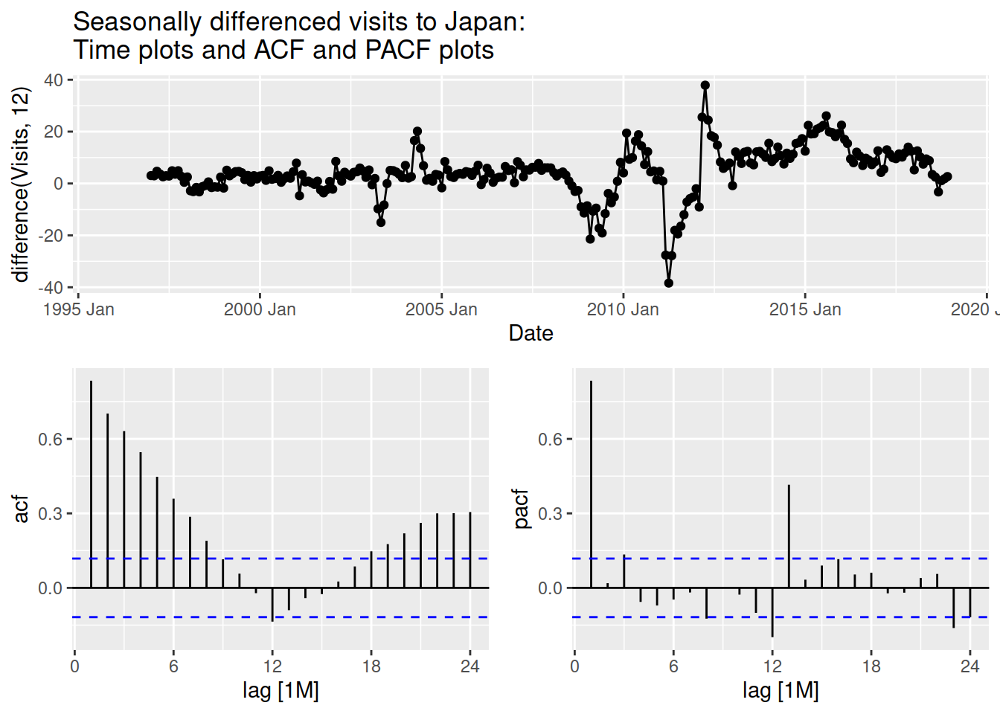

Do a 1-year horizon forecast of the total overseas residents’ visits to Japan using ETS and ARIMA models. Also, set a benchmark model from a simple method. Evaluate the point and distributional forecasts. Provide a recommendation based on the results.
Prerequisites
# Load required librarieslibrary(tidyverse)
── Attaching core tidyverse packages ──────────────────────── tidyverse 2.0.0 ──
✔ dplyr 1.1.4 ✔ readr 2.1.5
✔ forcats 1.0.0 ✔ stringr 1.5.1
✔ ggplot2 3.5.1 ✔ tibble 3.2.1
✔ lubridate 1.9.3 ✔ tidyr 1.3.1
✔ purrr 1.0.2
── Conflicts ────────────────────────────────────────── tidyverse_conflicts() ──
✖ dplyr::filter() masks stats::filter()
✖ dplyr::lag() masks stats::lag()
ℹ Use the conflicted package (<http://conflicted.r-lib.org/>) to force all conflicts to become errors
library(tsibble)
Attaching package: 'tsibble'
The following object is masked from 'package:lubridate':
interval
The following objects are masked from 'package:base':
intersect, setdiff, union
library(fable)
Loading required package: fabletools
library(fabletools)library(feasts)
Data Preparation
The training set is from the earliest observations to the end of 2018. The test set extends to the end of 2019. A training set for cross-validation is also set aside. It starts with 24 observations (2 seasonal periods) which extends by 12 observations (1 seasonal period) for each successive training set. This process creates a total of 22 training sets.
# Load the datasetload("tourism_agg.RData")
# Set aside observations for the training set and test settrain <- tourism_agg |>filter(is_aggregated(Purpose), is_aggregated(Region),year(Date) <=2018 )test <- tourism_agg |>filter(is_aggregated(Purpose), is_aggregated(Region),year(Date) <=2019 )# Prepare training set for cross-validationtrain_cv <- train |>stretch_tsibble(.init =24, .step =12)
Data Visualization
Recall the plot of the time series. The time series exhibits heteroskedasticity. STL decomposition indicates the seasonal component increases in variance over time. It has an upward trend which has flattened down in the later years.
# Plot the time series of the total visitstrain |>autoplot() +labs(title ="Monthly Overseas Residents' Visits to Japan (1996 - 2018)")
Plot variable not specified, automatically selected `.vars = Visits`
# STL decomposition of the total visitstrain |>model(STL(Visits ~trend(window =15) +season(window =11), robust =TRUE)) |>components() |>autoplot()
Benchmark Model
I first selected a benchmark model for later comparison. There are cases where a simple model does a better job than a more complicated model. Here I picked a seasonal naive method. The trend component has flattened out recently, and the seasonal component will likely stay roughly similar one year later. I used Box-Cox transformation, which improved the forecast accuracy.1
Model Selection
# Find the optimal lambda for Box-Cox transformation to stabilize the variancelambda <- train |>features(Visits, features = guerrero) |>pull(lambda_guerrero)
Looking at the plot, the Box-Cox transformation has effectively stabilized the variance. This transformation will be used later for ARIMA modeling.
# Plot the Box-Cox transformed time series of the total visitstrain |>autoplot(box_cox(Visits, lambda)) +labs(title ="Box-Cox Transformed Monthly Visits to Japan with λ = 0.28 (1996 - 2018)")
# Fit the modelbench_fit <- train |>model(SNAIVE(box_cox(Visits, lambda)))
Residual Diagnostics
The residuals are clearly not white noise, but I will try using it for forecasting anyway. Given this violation of the assumption of white noise residuals, the prediction intervals produced will not be reliable.
# Check the residualbench_fit |>gg_tsresiduals() +labs(title ="Residual diagnostic graphs for seasonal naive method")
Warning: Removed 12 rows containing missing values or values outside the scale range
(`geom_line()`).
Warning: Removed 12 rows containing missing values or values outside the scale range
(`geom_point()`).
Warning: Removed 12 rows containing non-finite outside the scale range
(`stat_bin()`).
Point Forecast
# Forecast using the fitted modelbench_fc <- bench_fit |>forecast(h ="1 year")
As we can see, the forecast works fine anyway, but obviously, this would not be the case if the trend had not flattened out. At this time horizon, it is unlikely that the seasonality would change much either.
# Plot the forecast to the test setbench_fc |>autoplot(test |>filter(year(Date) >2015), level =NULL) +labs(title ="Seasonal Naive Method:\nPoint Forecasts of Monthly Visits to Japan in 2019")
Below are the calculated point forecast accuracy measures. Lower is better. For MASE and RMSSE, aim for less than 1. These scaled errors are calculated by dividing by the average one-step naive forecast errors (seasonal in this case) computed on the training data.
# Produce point forecast accuracy measures (lower is better)# For MASE and RMSSE, aim for less than 1bench_fc |>accuracy(data = test,measures =list(rmse = RMSE, mase = MASE, rmsse = RMSSE) )
Loading required namespace: crayon
# A tibble: 1 × 7
.model Region Purpose .type rmse mase rmsse
<chr> <chr*> <chr*> <chr> <dbl> <dbl> <dbl>
1 SNAIVE(box_cox(Visits, lambda)) <aggregat… <aggregat… Test 1.14e5 0.700 0.536
Cross-validation
I also did a cross-validation for 1- to 12-step-ahead forecasts. This allows evaluation using only the training set while still keeping future observations from being used to calculate the forecast. It also allows evaluation with multiple training and test sets within the original training set. As seen below, in contrast to the simpler evaluation earlier, the cross-validation procedure shows a worse picture. The forecast accuracy is averaged over the test sets.
# Produce point forecast accuracy measures (lower is better)# For MASE and RMSSE, aim for less than 1train_cv |>model(snaive =SNAIVE(box_cox(Visits, lambda))) |>forecast(h ="1 year") |>accuracy( test,measures =list(rmse = RMSE, mase = MASE, rmsse = RMSSE) )
# A tibble: 1 × 7
.model Region Purpose .type rmse mase rmsse
<chr> <chr*> <chr*> <chr> <dbl> <dbl> <dbl>
1 snaive <aggregated> <aggregated> Test 206631. 0.988 0.973
Below we can see its performance for different forecast horizons. It does worse in the earlier months (spring to summer) than in the later months (fall to winter).2
# Set up the forecast, so it can be grouped by number of step aheads laterbench_fc_cv <- train_cv |>model(SNAIVE(box_cox(Visits, lambda))) |>forecast(h ="1 year") |>group_by(.id) |>mutate(h =row_number()) |>ungroup() |>as_fable(response ="Visits", distribution = Visits)
# Plot the accuracy measures by h-step aheadbench_fc_cv |>accuracy(test, by =c("h", ".model")) |>ggplot(aes(x = h, y = RMSSE)) +geom_point() +labs(title ="RMSSE as a function of forecast horizon for the seasonal naive method")
ETS Modeling
Model Selection
Given my observation earlier from the time series plots, the time series shows a clear trend, flattening out in the later years, and heteroskedasticity in the seasonal component. Thus, we consider ETS models with additive damped trend, multiplicative seasonality, and possibly multiplicative errors. For the section of the time series before 2020, there are strictly positive visits (Visits > 0), so models with multiplicative methods should work fine. In any case, the ETS function will automatically select the best model and avoid problematic model specifications. Unless we have concerns like those stated above or have additional information that may help better model the time series, it is okay to allow the function to pick the model automatically. For example, the trend has started to flatten out but only on the more recent observations, which would be helpful to indicate if the automatic selection failed to catch that.
# Fit the modelets_fit <- train |>model(ETS(Visits))# Check the model specificationets_fit |>components() |>autoplot()
Warning: Removed 12 rows containing missing values or values outside the scale range
(`geom_line()`).
The selected model ETS(M, A, M) is fairly consistent with my observation and matches my prospective model. However, it failed to see the dampening of the trend.3
Residual Diagnostics
It is important to check first if the residuals are white noise (no autocorrelation, mean zero, and constant variance) before producing a forecast. The residuals have a zero mean, but there might be autocorrelation. The Ljung-Box test, with lag = 24, indicates we cannot reject the null hypothesis of no autocorrelation.4 However, the left tail of the distribution is too long for a normal distribution due to outliers, which will cause issues in generating prediction intervals. This can be solved by using bootstrapped residuals, which will produce prediction intervals not symmetric around the mean forecast.
# Check the residualsets_fit |>gg_tsresiduals() +labs(title ="Residual diagnostic graphs for ETS model")
# Portmanteau test for autocorrelation# Using 24 lags, 2 times the seasonal period, 12.# Reject H0 if p < 0.05ets_fit |>augment() |>features(.innov, ljung_box, lag =24)
As expected, by failing to account for the damped trend, the model did not perform well when used for forecasting. This is worse than the benchmark model.
# Forecast using the fitted modelets_fc <- ets_fit |>forecast(h ="1 year")
# Plot the forecast to the test setets_fc |>autoplot( tourism_agg |>filter(year(Date) <=2019&year(Date) >2015),level =NULL ) +labs(title ="ETS Model:\nPoint Forecasts of Monthly Visits to Japan in 2019")
# Produce point forecast accuracy measures (lower is better)# For MASE and RMSSE, aim for less than 1ets_fc |>accuracy(data = test,measures =list(rmse = RMSE, mase = MASE, rmsse = RMSSE) )
# A tibble: 1 × 7
.model Region Purpose .type rmse mase rmsse
<chr> <chr*> <chr*> <chr> <dbl> <dbl> <dbl>
1 ETS(Visits) <aggregated> <aggregated> Test 304272. 1.52 1.43
Cross-validation
Compared to the benchmark model, the cross-validation shows a better performance for the ETS model.
# Produce point forecast accuracy measures (lower is better)# For MASE and RMSSE, aim for less than 1train_cv |>model(ETS(Visits)) |>forecast(h ="1 year") |>accuracy( test,measures =list(rmse = RMSE, mase = MASE, rmsse = RMSSE) )
# A tibble: 1 × 7
.model Region Purpose .type rmse mase rmsse
<chr> <chr*> <chr*> <chr> <dbl> <dbl> <dbl>
1 ETS(Visits) <aggregated> <aggregated> Test 145608. 0.616 0.686
Looking at the performance across different forecast horizons, in contrast to the benchmark, it is performing worse in the later months of the year.
# Set up the forecast, so it can be grouped by number of step aheads laterets_fc_cv <- train_cv |>model(ETS(Visits)) |>forecast(h ="1 year") |>group_by(.id) |>mutate(h =row_number()) |>ungroup() |>as_fable(response ="Visits", distribution = Visits)
# Plot the accuracy measures by h-step aheadets_fc_cv |>accuracy(test, by =c("h", ".model")) |>ggplot(aes(x = h, y = RMSSE)) +geom_point() +labs(title ="RMSSE as a function of forecast horizon for the ETS method")
Distributional Forecast
Due to the violation of the normality assumption in the residuals, the distributional forecast here is generated through bootstrapping the residuals.
# Set seed for reproducibilityset.seed(2024)# Produce a forecast with bootstrapped residualsets_boot_fc <- ets_fit |>forecast(h =12, bootstrap =TRUE, times =1000)
As seen below, the true value of the test set is within the 80% prediction interval.
# Plot the point and distributional forecastets_boot_fc |>autoplot(test |>filter(year(Date) >2015)) +labs(title ="ETS Model:\nPoint and Distributional Forecasts of Monthly Visits to Japan in 2019" )
Using the CRPS skill score, I evaluated the whole forecast distribution. The skill score version is used to compare different models. A CRPS skill score of more than 0 is preferred here, and the calculated skill score here is below zero. I will explain the reasoning later on. As we can also see, the point forecast measures are lower here. It could be similar to using a bagged forecast to produce a better forecast using bootstrapped time series. However, the procedure is not quite the same. I decided not to show it here as it is computationally intensive.
# Calculate the point and distributional forecast accuracy measures# Lower is better for RMSE, MASE, RMSSE# For CRPS, aim for more than 0, higher is betterets_boot_fc |>accuracy( test, measures =list(rmse = RMSE, mase = MASE, rmsse = RMSSE, skill =skill_score(CRPS)) )
# A tibble: 1 × 8
.model Region Purpose .type rmse mase rmsse skill
<chr> <chr*> <chr*> <chr> <dbl> <dbl> <dbl> <dbl>
1 ETS(Visits) <aggregated> <aggregated> Test 296044. 1.49 1.39 -1.10
Earlier I did a Box-Cox transformation on the benchmark, which improves the point forecast. I skipped doing distributional forecasts for the seasonal naive method since the residuals are problematic. Bootstrapping the residuals can only address the normality concern. In calculating the skill score, the benchmark used is SNAIVE(Visits), and as you can see below, it gives a skill score of zero. This is because it is the reference point. A positive value means a model is better than this benchmark, and a negative value means worse than this benchmark. For instance, a skill score of -0.4587168 means it is 45.87168% worse than the benchmark.
# Forecast with the seasonal naive method without transformation# Check the residualstrain |>model(SNAIVE(Visits)) |>gg_tsresiduals() +labs(title ="Residual diagnostic graphs for seasonal naive method")
Warning: Removed 12 rows containing missing values or values outside the scale range
(`geom_line()`).
Warning: Removed 12 rows containing missing values or values outside the scale range
(`geom_point()`).
Warning: Removed 12 rows containing non-finite outside the scale range
(`stat_bin()`).
# Calculate the point and distributional forecast accuracy measures# Lower is better for RMSE, MASE, RMSSE# For CRPS, aim for more than 0, higher is bettertrain |>model(SNAIVE(Visits)) |>forecast(h ="1 year") |>accuracy( test, measures =list(rmse = RMSE, mase = MASE, rmsse = RMSSE, skill =skill_score(CRPS)) )
# A tibble: 1 × 8
.model Region Purpose .type rmse mase rmsse skill
<chr> <chr*> <chr*> <chr> <dbl> <dbl> <dbl> <dbl>
1 SNAIVE(Visits) <aggregated> <aggregated> Test 123159. 0.756 0.580 0
# The accuracy measures for the benchmark modelbench_fc |>accuracy( test, list(rmse = RMSE, mase = MASE, rmsse = RMSSE, skill =skill_score(CRPS)) )
# A tibble: 1 × 8
.model Region Purpose .type rmse mase rmsse skill
<chr> <chr*> <chr*> <chr> <dbl> <dbl> <dbl> <dbl>
1 SNAIVE(box_cox(Visits, … <aggregat… <aggregat… Test 1.14e5 0.700 0.536 -0.459
Cross-validation
Compared to the cross-validation without bootstrapped residuals, the point forecast accuracy shows a slight improvement. On the other hand, the mean skill score from this approach is noticeably better than the results from a single pair of training and test sets.
# Set seed for reproducibilityset.seed(2024)# Calculate the point and distributional forecast accuracy measures# Lower is better for RMSE, MASE, RMSSE# For CRPS, aim for more than 0, higher is bettertrain_cv |>model(ETS(Visits)) |>forecast(h =12, bootstrap =TRUE, times =1000) |>accuracy( test,measures =list(rmse = RMSE, mase = MASE, rmsse = RMSSE, skill =skill_score(CRPS)) )
# A tibble: 1 × 8
.model Region Purpose .type rmse mase rmsse skill
<chr> <chr*> <chr*> <chr> <dbl> <dbl> <dbl> <dbl>
1 ETS(Visits) <aggregated> <aggregated> Test 145364. 0.610 0.684 0.951
ARIMA Modeling
Data Preparation
For ARIMA modeling, the time series needs to be stationary first. Except for ensuring the variance is constant, the ARIMA() function can automatically determine the necessary differencing to make the time series stationary. It would also select the optimal non-seasonal and seasonal orders of the AR and MA terms. Nevertheless, I will show here the method by looking at the ACF and PACF plots. Below, you can see that it needed first-order seasonal and first differencing to make the time series stationary.
# Do a Box-Cox transformation to stabilize the variancestabilized_train <- train |>mutate(Visits =box_cox(Visits, lambda))
# With seasonal differencingstabilized_train |>gg_tsdisplay(difference(Visits, 12), plot_type ="partial") +labs(title ="Seasonally differenced visits to Japan:\nTime plots and ACF and PACF plots" )
Warning: Removed 12 rows containing missing values or values outside the scale range
(`geom_line()`).
Warning: Removed 12 rows containing missing values or values outside the scale range
(`geom_point()`).

# With seasonal differencing and first differencingstabilized_train |>gg_tsdisplay(difference(Visits, 12) |>difference(), plot_type ="partial") +labs(title ="Seasonally and first differenced visits to Japan:\nTime plots and ACF and PACF plots" )
Warning: Removed 13 rows containing missing values or values outside the scale range
(`geom_line()`).
Warning: Removed 13 rows containing missing values or values outside the scale range
(`geom_point()`).
The last significant spike of seasonal lag is at lag 12 in the ACF, and lag 24 in the PACF. The last significant spike of non-seasonal lag is at lag 2 in the ACF and PACF. There is a significant spike at lag 22 in the PACF, but this is too high to use for the modeling. Based on that, the possible model combinations are the following: ARIMA(2, 1, 0)(2, 1, 0)12, ARIMA(2, 1, 0)(0, 1, 1)12, ARIMA(0, 1, 2)(0, 1, 1)12, ARIMA(0, 1, 2)(2, 1, 0)12.5 Below, the automatic selection chose a different model, ARIMA(0, 1, 2)(2, 0, 0)12, than my prospective models and chose not to do seasonal differencing. Later, I will show that the automatically selected model performs better in the forecasting of the test set.
# Fit the ARIMA modelarima_fit <- train |># The commented out setting searches harder for the best model# Nevertheless, it chose the same model as the faster setting# model(ARIMA(box_cox(Visits, lambda), stepwise = FALSE, approximation = FALSE ))model(ARIMA(box_cox(Visits, lambda))) |>report()
Same with the ETS model earlier, the residuals have a zero mean, but there might be autocorrelation. The Ljung-Box test, with degrees of freedom equal to 4, indicates that we cannot reject the null hypothesis of no autocorrelation.6 However, the left tail of the distribution is too long for a normal distribution due to an outlier, which again will cause issues in generating prediction intervals.
# Check the residualsarima_fit |>gg_tsresiduals() +labs(title ="Residual diagnostic graphs for ARIMA model")
# Portmanteau test for autocorrelation# Using 24 lags, 2 times the seasonal period, 12.# Using dof = p + q + P + Q = 0 + 2 + 2 + 0 = 4# Reject H0 if p < 0.05arima_fit |>augment() |>features(.innov, ljung_box, lag =24, dof =4)
Like the ETS model, the model did not perform well when used for forecasting and was worse than the benchmark method. It is unable to predict the dip in the later months. However, it does perform better than the ETS model.
# Forecast using the fitted modelarima_fc <- arima_fit |>forecast(h ="1 year")
# Plot the forecast to the test setarima_fc |>autoplot( test |>filter(year(Date) >2015),level =NULL ) +labs(title ="ARIMA Model:\nPoint Forecasts of Monthly Visits to Japan in 2019")
# Produce point forecast accuracy measures (lower is better)# For MASE and RMSSE, aim for less than 1arima_fc |>accuracy(data = test,measures =list(rmse = RMSE, mase = MASE, rmsse = RMSSE) )
# A tibble: 1 × 7
.model Region Purpose .type rmse mase rmsse
<chr> <chr*> <chr*> <chr> <dbl> <dbl> <dbl>
1 ARIMA(box_cox(Visits, lambda)) <aggregate… <aggregat… Test 2.10e5 1.04 0.990
Below, I compare the performance of the manually selected models to the automatically selected model. As you can see, the automatically selected model performed better.
# A tibble: 5 × 7
.model Region Purpose .type rmse mase rmsse
<chr> <chr*> <chr*> <chr> <dbl> <dbl> <dbl>
1 auto <aggregated> <aggregated> Test 210172. 1.04 0.990
2 manual3 <aggregated> <aggregated> Test 299820. 1.63 1.41
3 manual1 <aggregated> <aggregated> Test 304998. 1.67 1.44
4 manual4 <aggregated> <aggregated> Test 312352. 1.60 1.47
5 manual2 <aggregated> <aggregated> Test 329936. 1.72 1.55
Cross-validation
Compared to the benchmark model, the cross-validation shows a better performance for the ARIMA model. It also outperforms the ETS model.
# Produce cross-validation forecastsarima_fc_cv <- train_cv |>model(ARIMA(box_cox(Visits, lambda))) |>forecast(h ="1 year")
# Produce point forecast accuracy measures (lower is better)# For MASE and RMSSE, aim for less than 1arima_fc_cv |>accuracy( test,measures =list(rmse = RMSE, mase = MASE, rmsse = RMSSE) )
# A tibble: 1 × 7
.model Region Purpose .type rmse mase rmsse
<chr> <chr*> <chr*> <chr> <dbl> <dbl> <dbl>
1 ARIMA(box_cox(Visits, lambda)) <aggregate… <aggregat… Test 1.43e5 0.675 0.676
Same with the ETS model, Looking at the performance across different forecast horizon, in contrast to the benchmark, it is performing worse in the later months of the year.
# Plot the accuracy measures by h-step aheadarima_fc_cv |>group_by(.id) |>mutate(h =row_number()) |>ungroup() |>as_fable(response ="Visits", distribution = Visits) |>accuracy(test, by =c("h", ".model")) |>ggplot(aes(x = h, y = RMSSE)) +geom_point() +labs(title ="ARIMA Model:\nPoint and Distributional Forecasts of Monthly Visits to Japan in 2019" )
Distributional Forecast
Like in the ETS model, due to the violation of the normality assumption in the residuals, the distributional forecast here is generated by bootstrapping the residuals.
# Set seed for reproducibilityset.seed(2024)# Produce a forecast with bootstrapped residualsarima_boot_fc <- arima_fit |>forecast(h =12, bootstrap =TRUE, times =1000)
As seen below, the true value of the test set is within the 80% prediction interval.
# Plot the point and distributional forecastarima_boot_fc |>autoplot(test |>filter(year(Date) >2015)) +labs(title ="ARIMA Model:\nPoint and Distributional Forecasts of Monthly Visits to Japan in 2019" )
Same with the ETS model, the point forecast measures are lower here relative to the original. The calculated skill score is below 0 which is not ideal. However, it is better than the skill score of the ETS model.
# Calculate the point and distributional forecast accuracy measures# Lower is better for RMSE, MASE, RMSSE# For CRPS, aim for more than 0, higher is betterarima_boot_fc |>accuracy( test, measures =list(rmse = RMSE, mase = MASE, rmsse = RMSSE, skill =skill_score(CRPS)) )
# A tibble: 1 × 8
.model Region Purpose .type rmse mase rmsse skill
<chr> <chr*> <chr*> <chr> <dbl> <dbl> <dbl> <dbl>
1 ARIMA(box_cox(Visits, l… <aggregat… <aggregat… Test 2.11e5 1.05 0.996 -0.479
Cross-validation
Compared to the cross-validation without bootstrapped residuals, the point forecast accuracy shows a slight improvement. On the other hand, the mean skill score from this approach is noticeably better than the results from a single pair of training and test sets. This is the same case as with the ETS model. Comparing the results to the ETS model, the ETS model has a better skill score, but the ARIMA model has better point forecast accuracy.
# Set seed for reproducibilityset.seed(2024)# Calculate the point and distributional forecast accuracy measures# Lower is better for RMSE, MASE, RMSSE# For CRPS, aim for more than 0, higher is bettertrain_cv |>model(ARIMA(box_cox(Visits, lambda))) |>forecast(h =12, bootstrap =TRUE, times =1000) |>accuracy( test,measures =list(rmse = RMSE, mase = MASE, rmsse = RMSSE, skill =skill_score(CRPS)) )
# A tibble: 1 × 8
.model Region Purpose .type rmse mase rmsse skill
<chr> <chr*> <chr*> <chr> <dbl> <dbl> <dbl> <dbl>
1 ARIMA(box_cox(Visits, la… <aggregat… <aggregat… Test 1.43e5 0.677 0.675 0.945
Conclusion
Between ETS and ARIMA models, ARIMA provides better point and distributional forecasts. This is the case when evaluated through a test set. However, when evaluated through time series cross-validation, although the ARIMA model still has better point forecast accuracy, the ETS model has better distributional forecasts. Except when evaluated through cross-validation, the benchmark model, the seasonal naive method, outperforms the other two models.7 There are concerns however in the residuals of this method, and the fact that it does worse in the cross-validation might be an indication that its performance is not consistent. It is important to note however that there are indications from the time series plot that the seasonal naive method might perform well. The slope has flattened out, and seasonal component changing during a short period is also unlikely. Below, I show a possible middle ground, a simple average ensemble of the two, where the weakness of the ARIMA model and the seasonal naive method can be balanced by the other. Nevertheless, this still raises issues with the residuals. This may still be adapted provided this violation of assumptions is taken into account. I do not know enough about the forecasting practice to make this determination.
# Produce an ensemble of ARIMA model and seasonal naive methodensemble_fit <- train |>model(arima =ARIMA(box_cox(Visits, lambda)),snaive =SNAIVE(box_cox(Visits, lambda)) ) |>mutate(combination = (arima + snaive) /2)
The residuals still violate the white noise assumption.
# Check the residualsensemble_fit |>select(-c(arima, snaive)) |>gg_tsresiduals() +labs(title ="Ensemble of ARIMA model and seasonal naive method:\nResidual diagnostic graphs" )
Warning: Removed 12 rows containing missing values or values outside the scale range
(`geom_line()`).
Warning: Removed 12 rows containing missing values or values outside the scale range
(`geom_point()`).
Warning: Removed 12 rows containing non-finite outside the scale range
(`stat_bin()`).
The RMSSE value is between the two but is closer to the RMSSE of the seasonal naive method.8
# Set seed for reproducibilityset.seed(2024)# Produce a forecast# Calculate the point and distributional forecast accuracy measures# Lower is better for RMSE, MASE, RMSSE# For CRPS, aim for more than 0, higher is betterensemble_fit |>forecast(h ="1 year", bootstrap =TRUE, times =1000) |>accuracy( test,measures =list(rmse = RMSE, mase = MASE, rmsse = RMSSE) )
# A tibble: 3 × 7
.model Region Purpose .type rmse mase rmsse
<chr> <chr*> <chr*> <chr> <dbl> <dbl> <dbl>
1 arima <aggregated> <aggregated> Test 211464. 1.05 0.996
2 combination <aggregated> <aggregated> Test 137968. 0.793 0.650
3 snaive <aggregated> <aggregated> Test 115175. 0.698 0.542
In any case, I prefer recommending the more consistent models, ETS and ARIMA models, unless there is sufficient additional information to justify the use of the seasonal naive method. Although the performance of the ARIMA model is noticeably better than the ETS model in both point and distributional forecasts in a single pair of training and test sets, the performance is close between the two when evaluated through time series cross-validation. Given this, while I do prefer recommending the ARIMA model, the ETS model can still be competitive in a different scenario where the trend behavior has not recently changed.
References
Hyndman, R. J., and G. Athanasopoulos. 2021. Forecasting: Principles and Practice. 3rd ed. Melbourne, Australia: OTexts. https://OTexts.com/fpp3.
Footnotes
The model without transformations gives the following RMSE, MASE, and RMSSE values respectively: 123159.5, 0.7556678, 0.5798812. On the other hand, the model specification used here produces 113897.7, 0.6997752, and 0.5362734.↩︎
To produce this kind of plot, I used the sample codes from Section 5.10 of Forecasting: Principles and practice, 3rd edition (Hyndman and Athanasopoulos 2021).↩︎
When I manually chose a damped trend, the forecast worsened, but I saw an improvement in the forecast accuracy by manually adjusting the dampening parameter, phi. This parameter affects how fast the trend is dampened. I chose not to use and show it here since I am not familiar enough with the model to adjust the parameters manually.↩︎
The number of lags is chosen based on Hyndman and Athanasopoulos’s (2021) recommendation of the number of lags equalling twice the length of the seasonal period assuming this is no larger than the fifth of total observations.↩︎
With this selection method, the selection could only chose based on either ACF or PACF not both. For instance, ARIMA(2, 1, 2)(2, 1, 1)[12] is not possible. This does not necessarily discount them from being the better model, but these models cannot be picked based on the ACF and PACF plots.↩︎
Hyndman and Athanasopoulos (2021) recommend degrees of freedom equal to the number of AR and MA parameters.↩︎
Distributional forecasts cannot be evaluated for the seasonal naive method.↩︎
Skill score is not calculated as generating forecast combination distribution requires simulation of future sample paths which is computationally intensive.↩︎